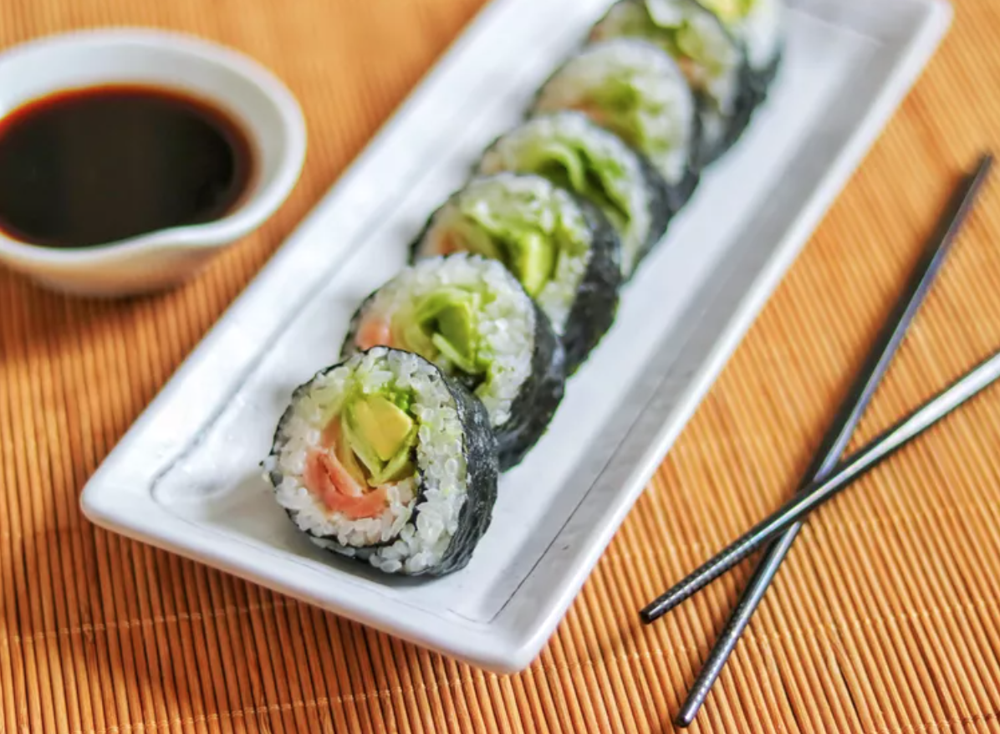

Back to home
Sushi recipe

Sushi
Ingredients
- 2 cups sushi rice
- 2 1/2 cups water
- 1/2 cup rice vinegar
- 2 tablespoons sugar
- 1 tablespoon salt
- 4 sheets nori (seaweed)
- 1 cucumber, julienned
- 1 avocado, sliced
- 8 oz sushi-grade raw fish (such as tuna or salmon), thinly sliced
- Soy sauce, for serving
- Pickled ginger, for serving
- Wasabi, for serving
Steps
- Rinse the sushi rice under cold water until the water runs clear.
- Combine the rice and water in a rice cooker and cook according to the manufacturer's instructions.
- In a small saucepan, combine the rice vinegar, sugar, and salt. Cook over medium heat until the sugar and salt are dissolved. Let it cool.
- Transfer the cooked rice to a large bowl and gently fold in the vinegar mixture. Let the rice cool to room temperature.
- Place a sheet of nori on a bamboo sushi mat. Spread a thin layer of rice over the nori, leaving a 1-inch border at the top.
- Arrange the cucumber, avocado, and fish in a line along the bottom edge of the rice.
- Using the bamboo mat, roll the sushi tightly from the bottom to the top. Moisten the top border with water to seal the roll.
- Slice the roll into bite-sized pieces using a sharp knife.
- Serve with soy sauce, pickled ginger, and wasabi.
Enjoy!